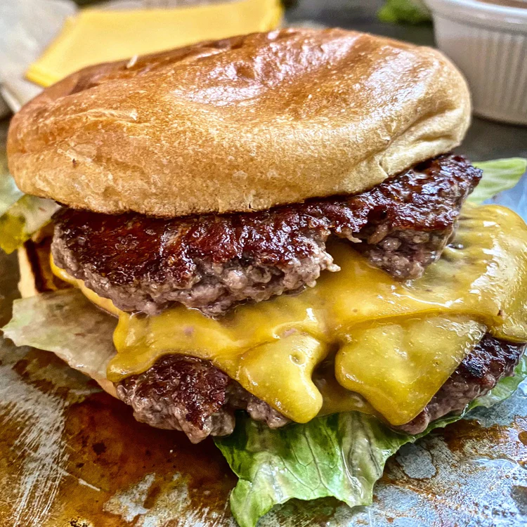

Smash Burger

Description
Imagine a sizzling patty on the grill, its edges crisping up with a tantalizing sear. The beef, freshly ground and seasoned just right, forms a juicy, flavorful patty that's been expertly smashed onto the hot griddle. As it cooks, the edges caramelize to a rich, deep brown, while the center remains succulent and tender.
Each mouthful is a harmony of textures and flavors: the crunch of the vegetables, the creamy cheese, the savory beef, and the slight sweetness of the bun. The burger is a masterpiece of indulgence, a celebration of comfort food that combines simplicity with an explosion of taste.
Ingredients
- Ground Beef
- Burger Buns - toasted
- Red Onion - thinly sliced
- American Cheese
- Iceburg Lettuce - sliced
- Special Sauce - combine ketchup, yellow mustard and mayonaise
Steps
- Prepare your burger bun by laying toppings on the bottom bun. Have it nearby and ready for when your burger is cooked.
- Position your Baking Steel or Baking Steel Griddle on the stovetop or grill. Preheat on high heat for 10-15 minutes, looking for a surface temperature of 400-425 degrees F. To test the surface, sprinkle a few drops of water on top of the surface; they should “dance” rapidly across the hot surface, evaporating in moments.
- Place the balls of beef on the griddle and use a stiff metal spatula to smash them down into the griddle, using a second spatula to add targeted pressure. Smashed patties should be slightly wider than the burger bun.
- Season generously with salt and pepper and allow to cook until well browned and top is beginning to turn pale pink/gray in spots, about 45 seconds. Using a bench scraper or the back side of a metal spatula, carefully scrape the burger patties from the surface, making sure to get all the tasty browned bits.
- Flip patties and immediately place a slice of cheese over one patty and stack the second directly on top. Immediately remove from griddle and transfer to waiting burger and bun. Serve immediately.